Metarank:
Building an open-source online LTR engine
Grebennikov Roman | Haystack EU, 2022
This is me

- Long ago: PhD in CS, quant trading, credit scoring
- Past: Search & personalization for ~7 years
- Now:
UnemployedFull-time open-source contributor
RANKING
Not [only] about search
Not [only] about e-commerce
Not [only] static
Learn-to-rank, again?

- A low-hanging fruit, existing tooling
- poke - a/b test - poke - a/b test
- Iterative a/b tests take a lot of time
- More weights = more problems
- Learn-to-rank needs a myriad of MLops things
- Long project, no experience, no tooling = high risk
- BM25 * CTR = quick feedback
- LTR =

- BERT, HNSWlib & FAISS are 2018
- Existing tooling made it approachable
LTR: a high risk investment
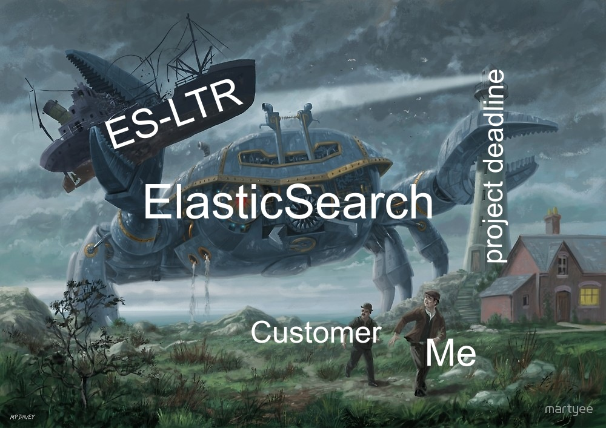- team: ML/MLops experience
- time: 6+ months, not guaranteed to succeed
- tooling: custom, in-house
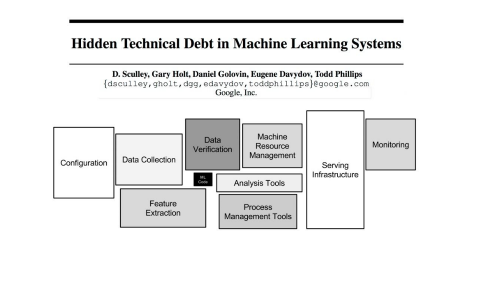
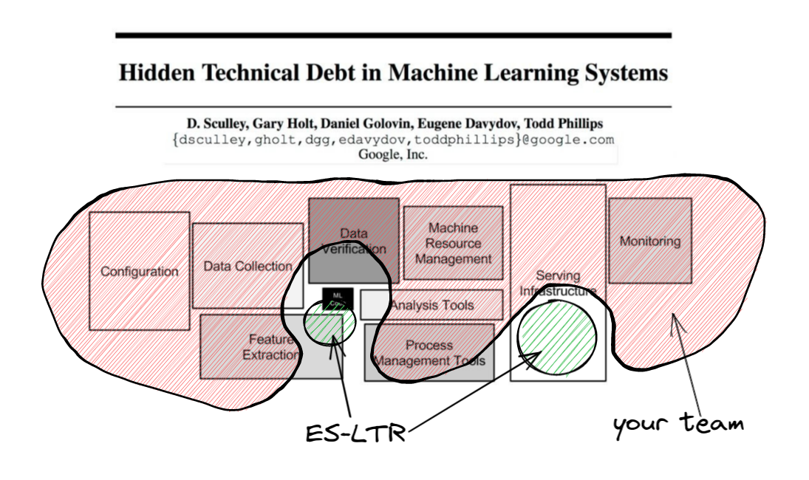
Are my ranking factors unique?
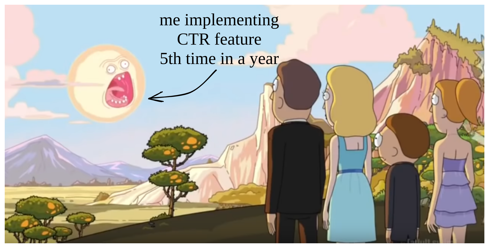
- UA, Referer, GeoIP
- query-field matching, item metadata
- counters, CTR, visitor profile
Is my data setup unique?
- data model: clicks, impressions, metadata
- feature engineering: compute and logging
- feature store: judgement lists, history replay, bootstrap
- typical LTR ML models: LambdaMART
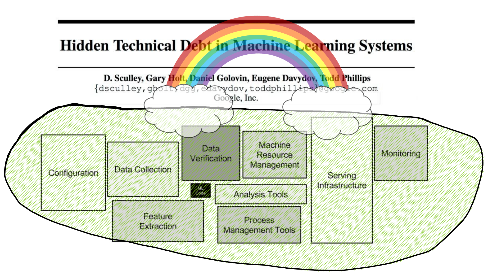
- cover 90% typical tasks in 10% time?
Metarank
a swiss army knife of re-ranking

A secondary re-ranker
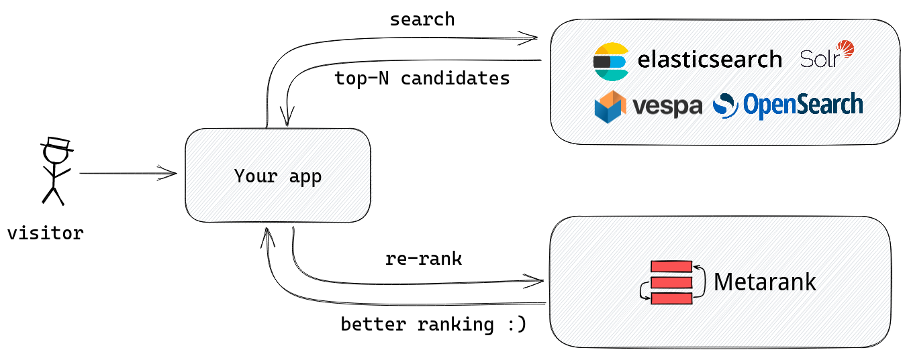Inside Metarank
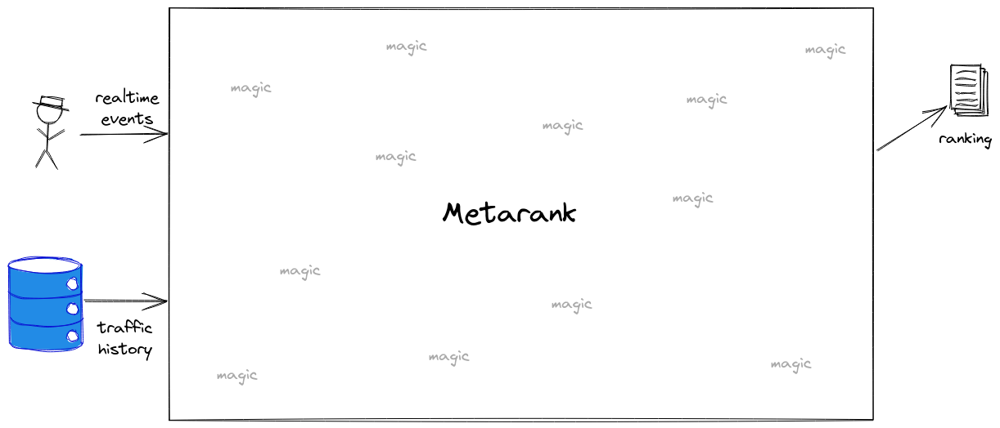Inside Metarank
Open Source
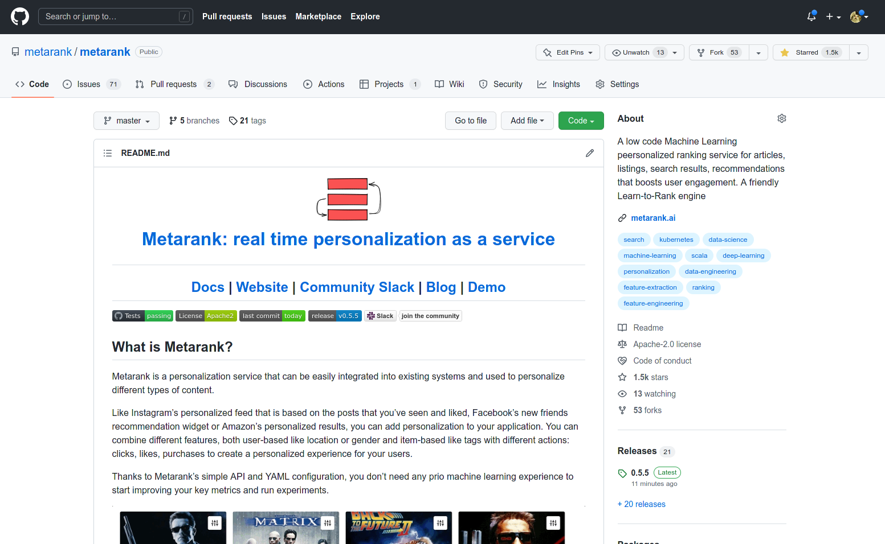- Apache2 licensed, no strings attached
- Single jar file, can run locally
Taking off
- Import historical events: S3, HTTP, files
- Train: LambdaMART @ XGBoost & LightGBM
- Inference: API, Redis as backend
Data model
Inspired by GCP Retail Events, Segment.io Ecom Spec:
-
Metadata: visitor/item specific info
- item price, tags, visitor profile
-
Impression: visitor viewed an item list
- search results, collection, rec widget
-
Interaction: visitor acted on an item from the list
- click, add-to-cart, mouse hover
Document metadata example
{
"event": "item",
"id": "81f46c34-a4bb-469c-8708-f8127cd67d27",
"item": "product1",
"timestamp": "1599391467000",
"fields": [
{"name": "title", "value": "Nice jeans"},
{"name": "price", "value": 25.0},
{"name": "color", "value": ["blue", "black"]},
{"name": "availability", "value": true}
]
}
- Unique event id, item id and timestamp
- Optional document fields
- Partial updates are OK
Ranking event example
{
"event": "ranking",
"id": "81f46c34-a4bb-469c-8708-f8127cd67d27",
"timestamp": "1599391467000",
"user": "user1",
"session": "session1",
"fields": [
{"name": "query", "value": "socks"}
],
"items": [
{"id": "item3", "relevancy": 2.0},
{"id": "item1", "relevancy": 1.0},
{"id": "item2", "relevancy": 0.5}
]
}
- User & session fields
- Which items were displayed, BM25 score
Interaction event example
{
"event": "interaction",
"id": "0f4c0036-04fb-4409-b2c6-7163a59f6b7d",
"impression": "81f46c34-a4bb-469c-8708-f8127cd67d27",
"timestamp": "1599391467000",
"user": "user1",
"session": "session1",
"type": "purchase",
"item": "item1",
"fields": [
{"name": "count", "value": 1},
{"name": "shipping", "value": "DHL"}
],
} - Multiple interaction types: likes/clicks/purchases
- Must include reference to a parent ranking event
Demo: ranklens dataset
No-code YAML feature setup
Goal: cover 90% most common ML features
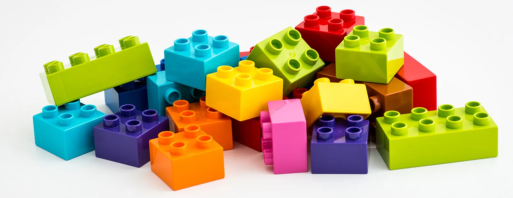- feature extractors: compute ML feature value
- feature store: add to changelog if changed
- online serving: cache latest value for inference
Feature extractors: basic
// take a value from item metadata
- name: budget
type: number
scope: item
source: item.budget
ttl: 60 days
Feature extractors: basic
// one-hot/label encode a string
- name: genre
type: string
scope: item
source: item.genre
values:
- comedy
- drama
- action
Special transformations
// index encode mobile/desktop/tablet category
// from User-Agent field
- name: platform
type: ua
field: platform
source: ranking.ua
- There should be a User-Agent field present in ranking event
Counters
// count how many clicks were done on a product
- name: click_count
type: interaction_count
scope: item
interaction: click
- Uh-oh, there shouldn't be a global counter!
More counters!
// A sliding window count of interaction events
// for a particular item
- name: item_click_count
type: window_count
interaction: click
scope: item
bucket_size: 24h // make a counter for each 24h rolling window
windows: [7, 14, 30, 60] // on each refresh, aggregate to 1-2-4-8 week counts
refresh: 1h
Rates: CTR & Conversion
// Click-through rate
- name: CTR
type: rate
top: click // divide number of clicks
bottom: impression // to number of examine events
scope: item
bucket: 24h // aggregate over 24-hour buckets
periods: [7, 14, 30, 60] // sum buckets for multiple time ranges
- Rate normalization: 1 click + 2 impressions != CTR 50%
Profiling
// Does this user had an interaction before
// with other item with the same field value?
- name: clicked_color
type: interacted_with
interaction: click
field: metadata.color
scope: user
Per-field matching
- name: title_match
type: field_match
itemField: item.title
rankingField: ranking.query
method:
type: ngram
n: 3
- Lucene language-specific tokenization is supported
Demo: ranklens config
Demo: import and training the model
What has just happened?

What has just happened?
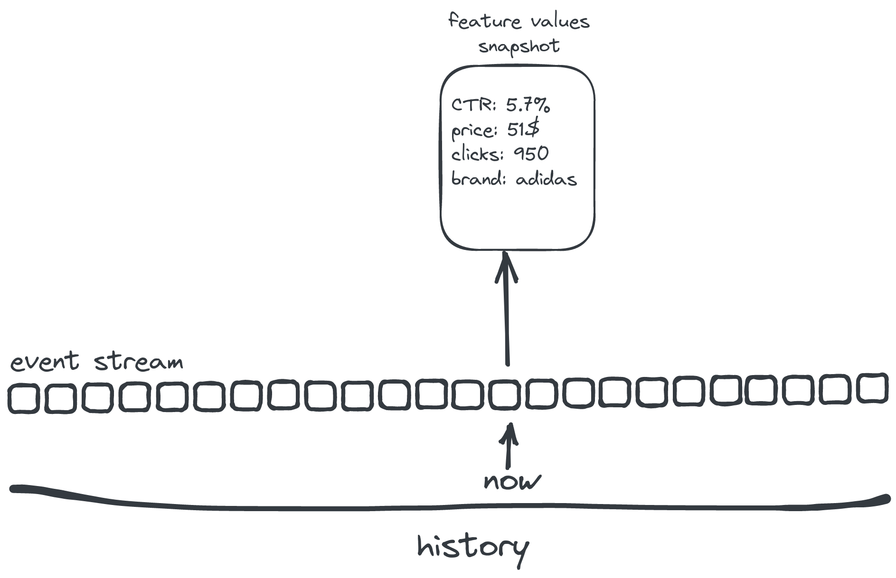
What has just happened?
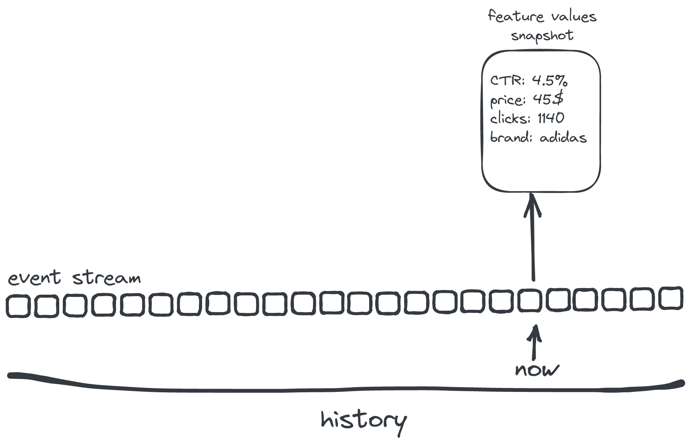
What has just happened?
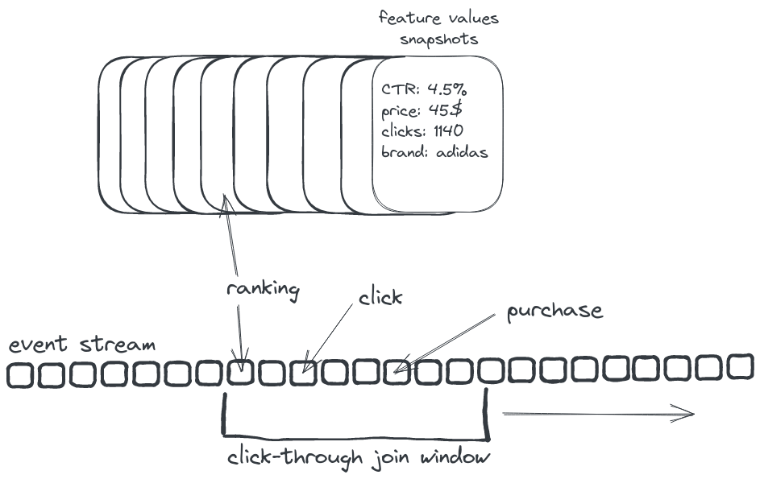
Implicit judgements
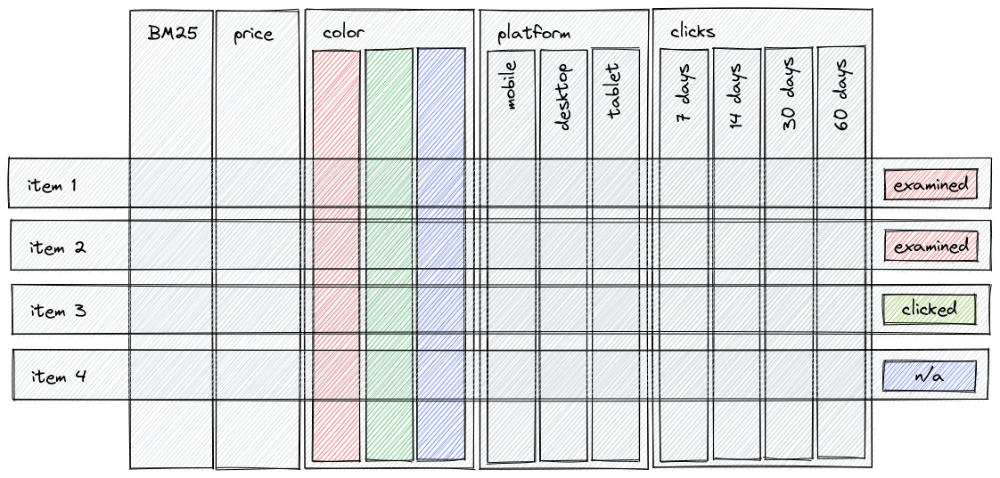- Feed all of them into LambdaMART
Demo: sending requests
[not only] personalization
- Demo: interacted_with dynamic features ⇒ dynamic ranking
- Pilot: static features ⇒ precomputed ranking
[not only] reranking
- soon: recommendations retrieval (MF/BPR/ALS)
- soon: merchandising
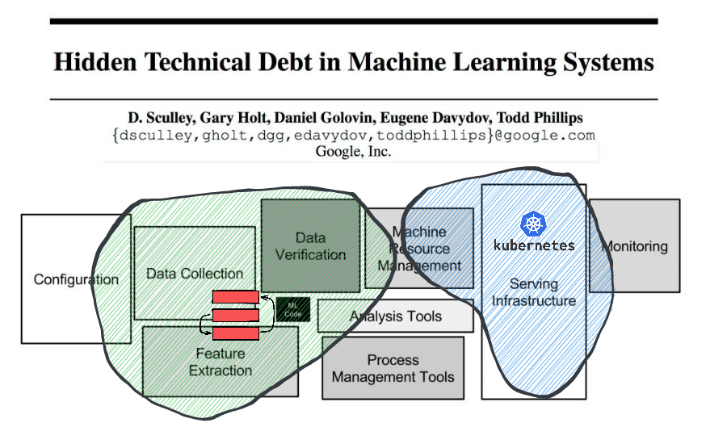
- Data collection: event schema, kafka/kinesis/pulsar connectors
- Verification: validation heuristics
- ML Code: LambdaMART now, more later
- Feature extraction: manual & automatic f. engineering
Cloud-native by design
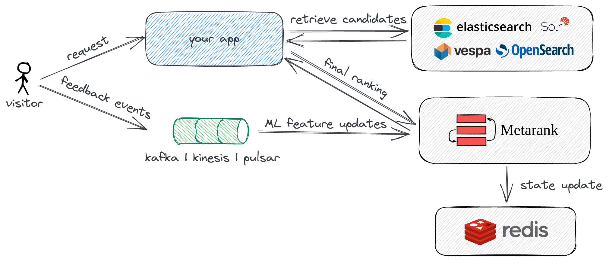
- ops: k8s stateless deployment, up/down scaling
- mlops: ML model retraining, A/B testing
Current status
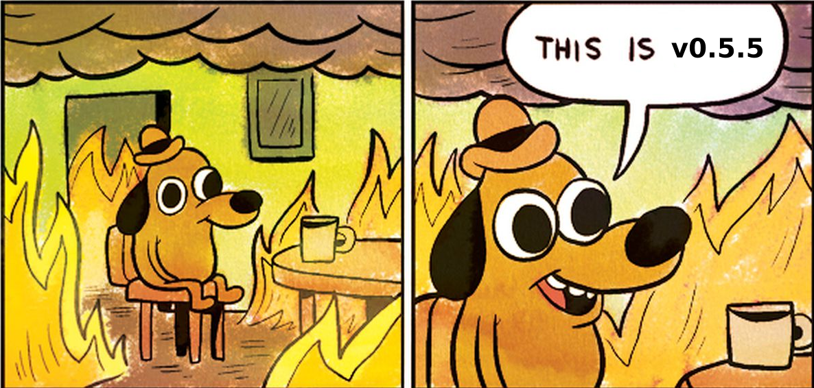- Not MVP: running in prod in pilot projects
- k8s distributed mode, snowplow integration
- A long backlog of ML tasks: click models, LTR, de-biasing
We built Metarank to solve our problem.
But it may be also useful for you- Looking for feedback: what should we do next?
- Your unique use-case: what are we doing wrong?